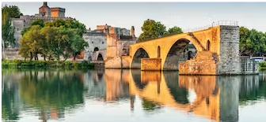
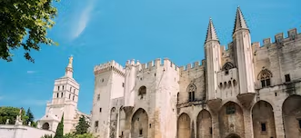
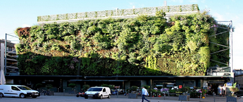
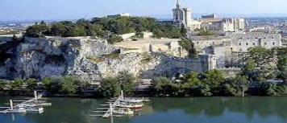
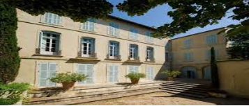
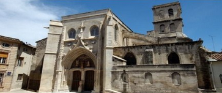
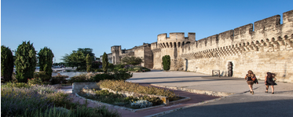
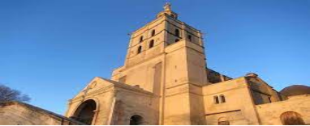

-
Pont d'Avignon
The Pont d'Avignon, also known as the Pont Saint-Bénézet, is a remnant of the Rhône bridge built in the 12th century, which now has only 4 arches - although it served as a link to the Île de la Barthelasse.
Find out morePalais des Papes
The Palais des Papes is the largest Gothic palace in the world, and a UNESCO World Heritage Site. It was home to 9 popes during the 14th century. The city is called the "City of Popes" in reference to this emblematic monument.
Find out moreÎle de la Barthelasse

Île de la Barthelasse is a 700-hectare river island whose land was purchased in 1447 by Jean Richard, known as "Barthelucius", who planted wheat and quickly made a fortune.
Find out moreBasilique Saint-Pierre

The Gothic basilica of Saint-Pierre d'Avignon was rebuilt in 1385, thanks to donations from Cardinal Pierre de Près. Unfinished, construction resumed in the 15th century.
Find out moreMusée Calvet

In a handsome 18th-century mansion, is housed the Musée Calvet's rich collection of fine art, paintings and sculptures from the 15th to the 20th centuries, which was too cramped in the former Saint-Martial convent.
Find out moreLes Halles d'Avignon
This hall-covered market is recognized for the quality of its produce in the heart of the City of Popes. Considered a convivial meeting place, it's not to be missed.
Find out moreRocher des Doms
The Rocher des Doms is a rocky spur overlooking the Rhône, with its 30 m sheer cliff face. It served as protection for the city's foundation and development. Its summit is covered by a public garden called Jardin des Doms.
Find out moreMusée Angladon
The Musée Angladon - Collection Jacques Doucet is located in the Hôtel de Massilian and features masterpieces by Degas, Cézanne, Sisley, Picasso, Modigliani and Van Gogh, from the collections of the couturier Jacques Doucet.
Find out moreCollégiale Saint-Agricol d'Avignon
The Collégiale Saint-Agricol of Avignon is a church built in the 7th century by Saint Agricol. Now listed as a historical monument since 1980, it houses the relics of Saint Agricol, patron saint of the city.
Find out moreLes remparts d’Avignon
The ramparts, a UNESCO World Heritage site, encircle the old town. 4.3 km long, they were begun in 1355 under the pontificate of Innocent VI to repel the assaults of the Grandes Compagnies, and completed in 1370 under Urban V.
Find out moreMusée du Petit Palais

A must on any guided tour of Avignon, the Petit Palais houses a major collection of Italian Renaissance paintings, including works by Sandro Botticelli and Vittore Carpaccio.
Find out moreNotre Dame des Doms d'Avignon
Built in the 12th century and remodeled in the 15th and 17th centuries, the Metropolitan Basilica of Notre Dame des Doms overlooks the Rhône valley from the Rocher des Doms, next to the Palais des Papes.
Find out more